🔥 幕一 · 赵总的反击
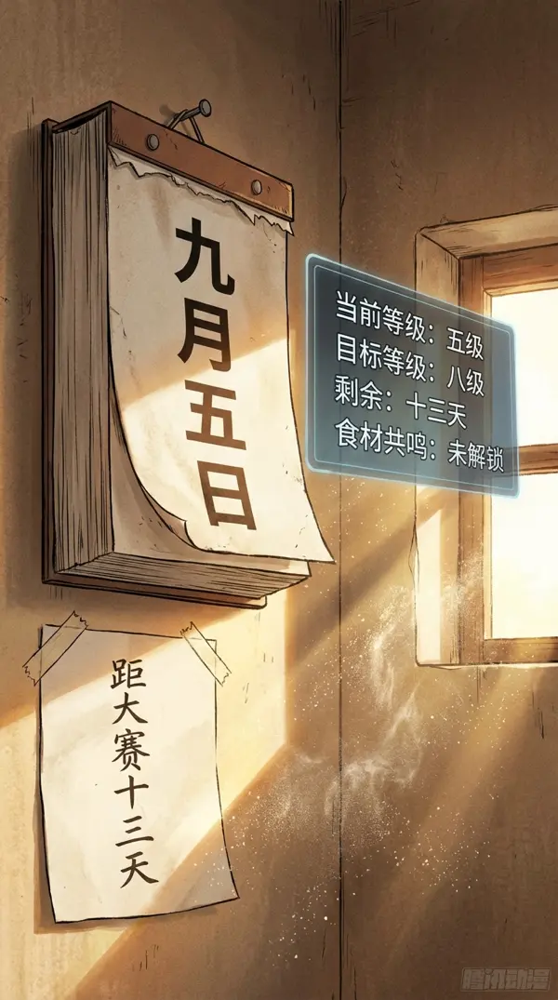
拿到许可证第二天，我就开始训练了。系统给出的升级路线：Lv.5→Lv.6需要"复合调味掌控"，Lv.6→Lv.7需要"食材处理极致化"，Lv.7→Lv.8需要……它没说。只写了两个字："觉醒。"
【厨神系统】我问小鲜："觉醒是什么意思？"它第一次没有毒舌回答我。它说："我不确定。这部分的说明书……好像被撕掉了。"
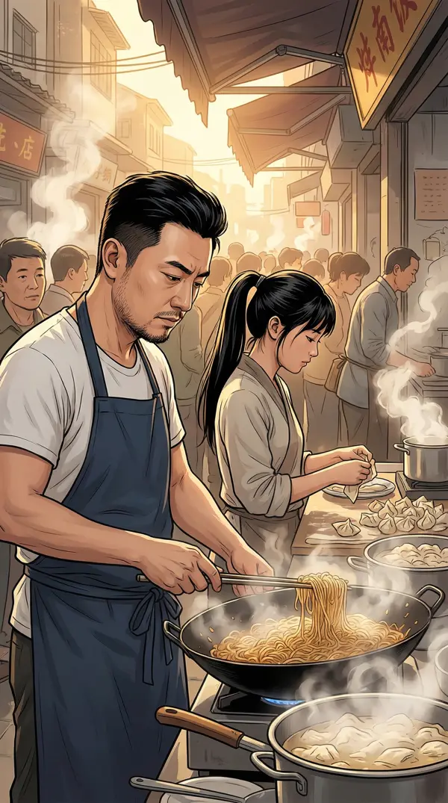
美食街恢复了营业。许可证贴在摊位最显眼的地方——不是给顾客看的，是给赵总看的。一个大叔一边吃面一边说："你这面比上周好吃了。"味觉透视告诉我：他说的是真的。我的调味精度提升了23%。但Lv.5到Lv.6的差距不是23%——是另一个维度。
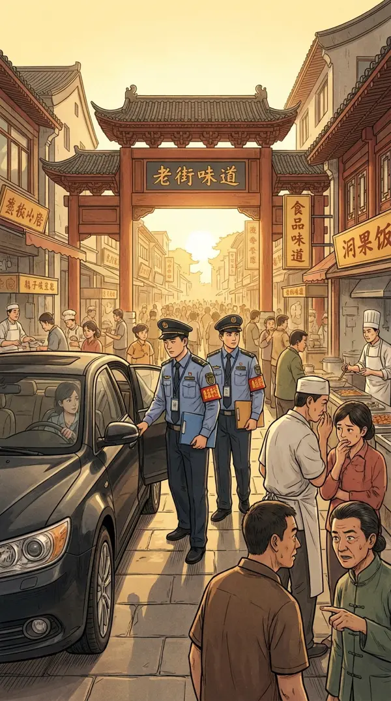
上午十点，一辆黑色轿车停在街口。两个穿制服的人下来，手里拿着文件夹。美食街的老摊主们互相使了个眼色——都知道是什么意思。林小鱼在旁边低声说："赵总的人。"
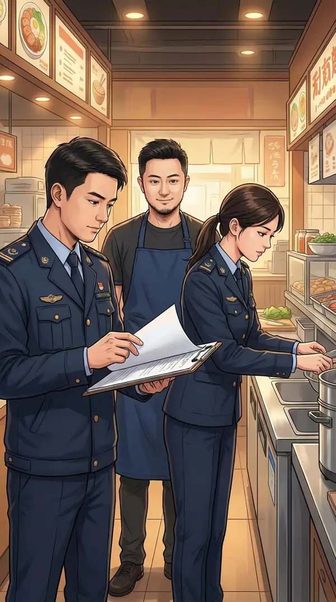
"朱江先生？我们接到举报，需要对您的摊位进行食品安全专项检查。"又是举报。赵总的剧本就两招：要么举报你违规，要么用检查拖你时间。上辈子做AI公司的时候，竞对也这么干——不是用产品打你，是用投诉、专利诉讼和工商检查拖死你。但我学到一件事：你越慌，他们就越来劲。
⚡ 决策点 #12
食品督察要求停业整顿三天——赵总的真正目的是浪费训练时间。怎么应对？
A. 配合停业，利用三天全身心训练——反客为宜
B. 当面据理力争——许可证刚发，凭什么停业
✦ C. 配合检查同时录像取证——合法合规留下证据，通知记者跟进
"菩萨心肠霹雳手段"——不正面冲突，不浪费时间争论，配合的同时收集证据。合规是盾，证据是矛。你越配合，他越找不到把柄。但你的手机在录像。
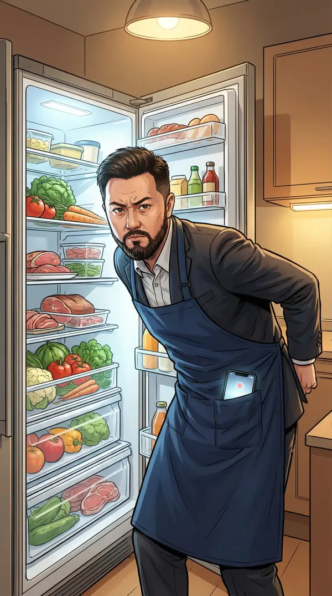
我把摊位从头到尾打开给他们看。冰箱温度、食材进货单、许可证——全部主动出示。手机在我围裙口袋里，摄像头朝外。我在创业时学过一课：当有人来查你，最好的姿态是完全透明+全程记录。如果你是干净的，透明只会伤害找茬的人。
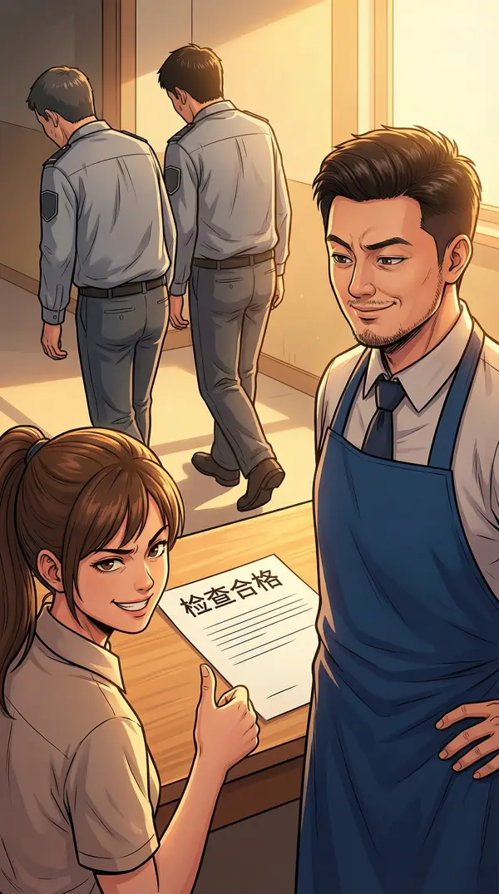
最终他们留下一张"检查合格"的单子走了。赵总花了两个小时想浪费我三天——结果浪费了他自己两个督察的工资。"你的手机录够了吗？""不只手机。摊位角落那个摄像头，是我昨晚装的。""你什么时候——""做安全的人，第一件事永远是装监控。"
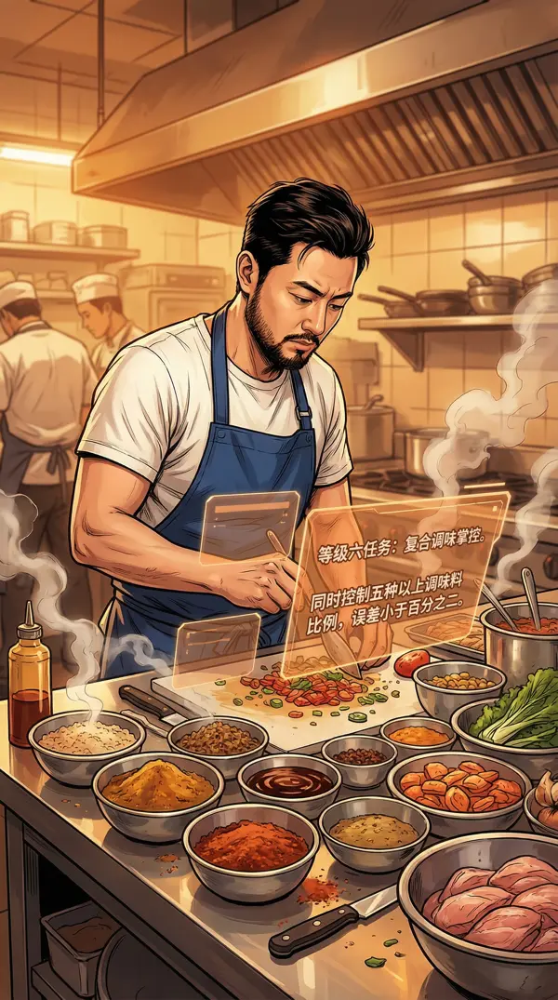
督察走后，我把摊位交给小鱼，钻进后厨。13天的时间被督察吃掉了半天，更要抓紧。系统显示Lv.6任务：复合调味。同时控制五种以上调味料的精确比例。听起来不难？做AI调参的时候，我也觉得"不就是调几个参数"。结果调了三个月。
【Lv.6任务】复合调味掌控 — 三道菜，每道必须同时控制5种以上调味料比例，误差≤2%
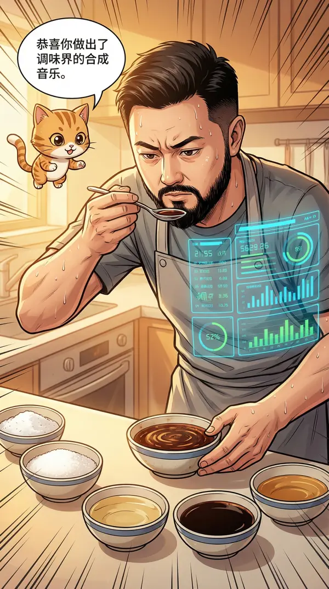
Lv.6的训练像在解一道有无穷解的方程。盐、糖、醋、酱油、料酒——五种调料的组合空间是连续的。我做了第一道——系统评分87。尝了一口：技术上对，但……死了。像一首音准完美但没有感情的歌。小鲜皱眉："数据满分但没灵魂。恭喜你做出了调味界的AI合成音乐。""你是说我做菜像AI？""你本来就是靠AI系统做菜的。""但我是有灵魂的AI用户。""你确定？"
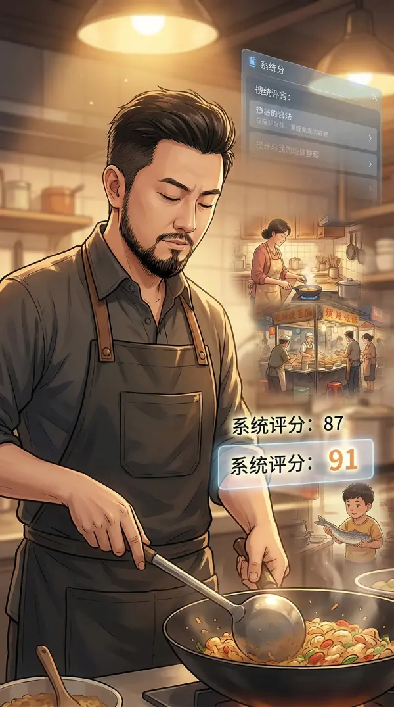
做到第三天晚上，我想通了。关掉系统的调味建议，凭记忆调。妈妈的红烧肉——偏甜、酱油重、有焦香。路边摊的麻辣烫——不讲究比例，全凭手感。小时候舅舅做的鱼——醋多了一点但刚好解腻。这些味道不在任何食谱里，但它们是"好吃的"。因为好吃不是数据最优——是记忆最深。91分。Lv.6解锁。
【系统】Lv.6解锁！✓ 复合调味掌控 — 小鲜："你终于学会用脑子以外的东西思考了。"
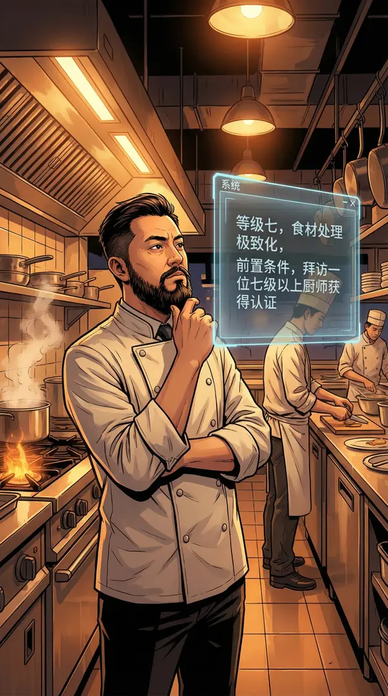
Lv.7的任务不一样了。不是做菜——是找人。系统说我需要一位Lv.7以上厨师的"认证"才能开始这一级的修炼。就像博士资格考试需要导师签字。我想到一个人——王厨。美食街的前辈，做了四十年菜，去年退休。他的级别？Lv.7.3。二十年前到过这个水平，之后一直没再进步。"为什么？""因为Lv.8需要'食材共鸣'。他说他听不到。"
🌿 幕二 · 用心听
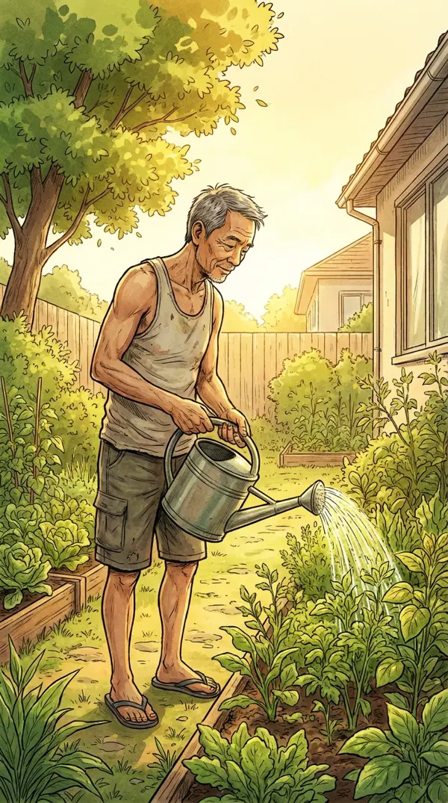
王厨退休后搬到城郊，弄了个小院子。院子里种着十几种蔬菜和几十种香料——薄荷、紫苏、小葱、花椒树。我站在门口的时候，他正在给番茄浇水。"来了？""王厨，我需要您帮个忙。""你要冲Lv.8？"他没抬头。"整条美食街都在传——那个做AI的小伙子要参加厨艺大赛。你是有多高调？"
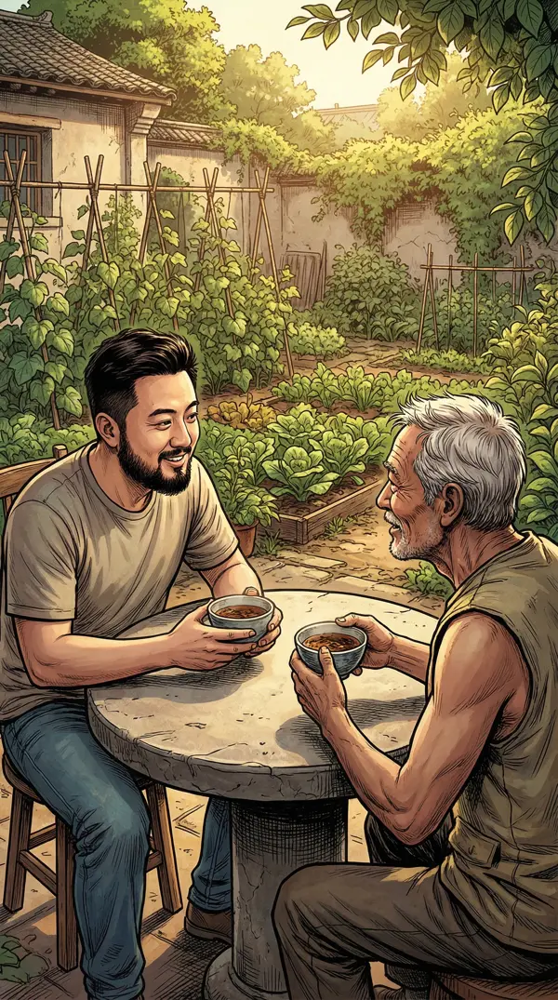
"我教不了你Lv.8。因为我自己就卡在Lv.7二十年了。""那Lv.7呢？""Lv.7我可以带你入门。但你要答应我一件事。""什么？""学的时候，关掉你那个系统。"我愣了。"因为Lv.7不是更精准地处理食材——是用心感受食材。你那个系统给你数据，但数据会挡住你的感觉。就像你带着墨镜看日落——什么都看得见，但颜色不对。"
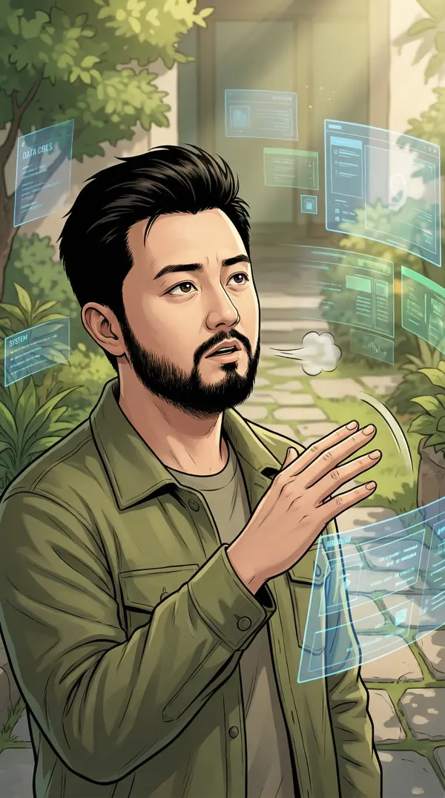
我关了系统。视野里的数据标签一个个消失——温度、湿度、食材属性面板……像关掉了一个巨大的HUD界面。世界突然安静了。我才意识到，从获得系统的第一天起，我就没在没有数据辅助的情况下看过任何食材。没有数据的西红柿，就只是一个红色的、圆圆的、有点软的东西。小鲜的声音也消失了。第一次感到孤独。
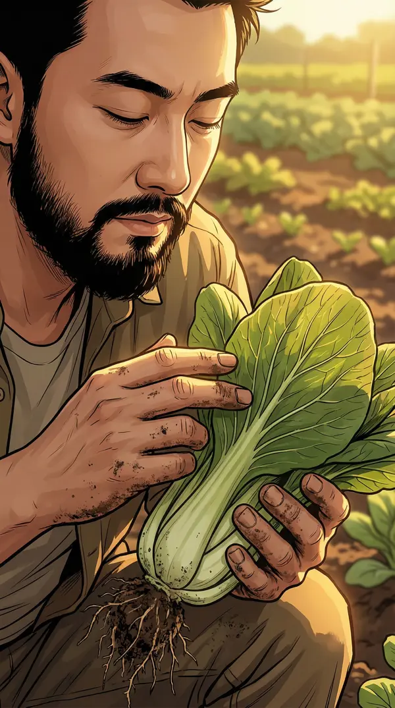
"拿着。"他递给我一棵白菜。刚从地里拔出来的，根上还带着泥。"告诉我，这棵白菜怎么样。"以前我会说：含水量82%，纤维密度中等，最佳烹饪方式清炒或炖汤。现在没有系统——我只能说："挺……新鲜的？""新鲜？你说的是眼睛看到的。闭眼。用手摸。"
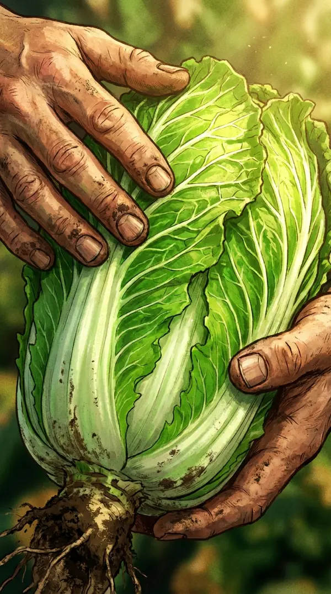
我闭上眼，手指压在白菜叶上。叶脉在指尖下微微凸起。根部硬，叶尖软。外层叶厚实带一点粗糙，越往里越嫩滑。泥土的味道混着一种……甜？不是糖的甜，是活着的东西特有的那种甜。"你感觉到了什么？""它……好像有温度。""那就是生命力。做菜不是处理食材——是和食材对话。你要听它告诉你，它想变成什么样的菜。"
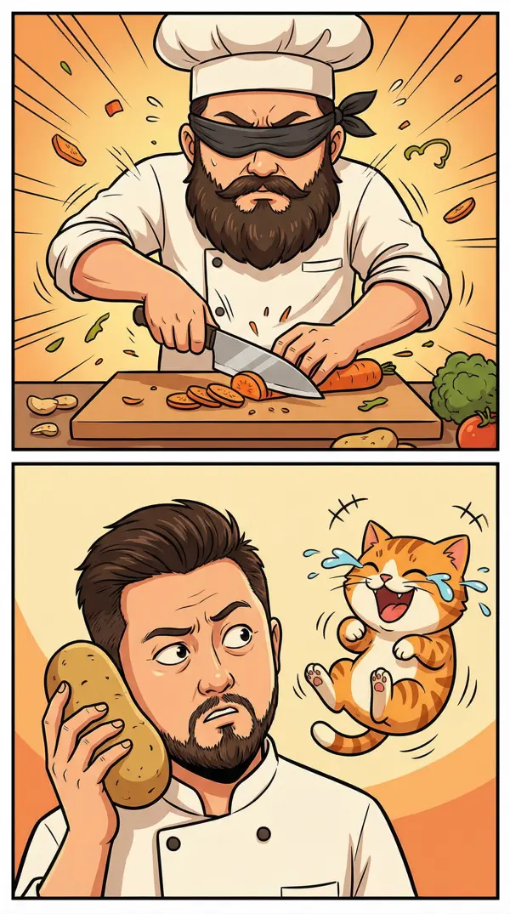
接下来三天，王厨的训练方法让我怀疑人生。蒙眼切菜——用手感判断胡萝卜的纤维走向。"听"土豆——他让我把耳朵贴在土豆上。我贴了。什么也没听到。小鲜在旁边笑到飘不稳："你的样子像在跟土豆说悄悄话。""你给我闭嘴。你被关了静音你在旁边嗑什么瓜？""我自带电池。"
⚡ 决策点 #13
王厨说有条"捷径"——完美复刻他的招牌菜就能获认证。但他警告："捷径能让你到Lv.7，但到不了Lv.8。"
A. 走捷径——先拿到Lv.7再说，时间不等人
✦ B. 不走捷径——自己找到Lv.7的理解方式
C. 先复刻学习，再发展自己的理解
"做AI时学到的最重要的一课——捷径通向的都是悬崖。"从Lv.5到现在，每一次真正的突破都是自己想通的。复刻别人的理解=做别人的产品。我要做自己的Lv.7。
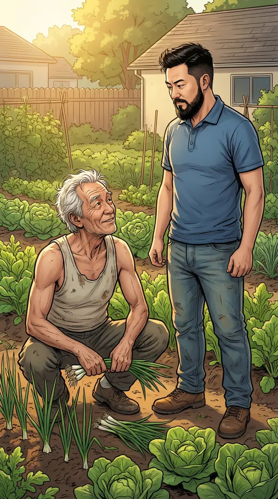
"不。"我没犹豫。上辈子创业的时候，有人说"抄个产品改一改就行"。我没抄。花了两年做原创，差点做死。但活下来的那个产品，是我的——不是任何人的复制品。做菜也一样。王厨站起来，拍掉膝盖上的土。"好。那我教你一件真正有用的事——Lv.7的秘密不在厨房里。在菜地里。"
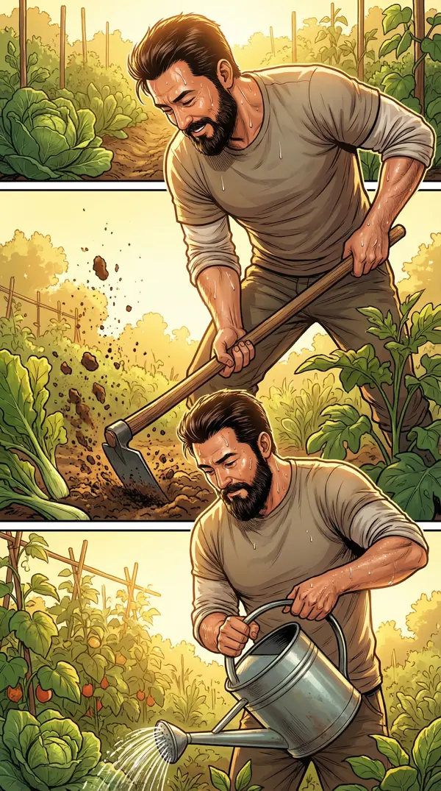
他让我在菜地里干了三天农活。翻土、浇水、除草、施肥。三天之后，我理解了。食材不是从超市货架上凭空出现的。一棵白菜从种子到成熟需要60天。一头猪从出生到出栏需要6个月。一条鱼在水里游了整整一年，才到了我的砧板上。当你知道一个食材"活过多久"——你就不会随便对待它。这就像用户——当你把用户当数据，你永远做不出好产品。当你把用户当人，产品自己会长出灵魂。
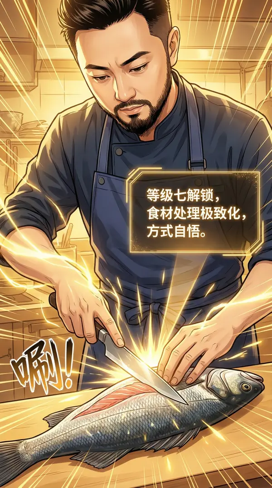
第十天。回到厨房。拿起刀的时候——手感不一样了。以前切菜是"我要把食材切成我要的形状"。现在是"食材在告诉我它该怎么切"。我切了一整条鱼。王厨检查了鱼片——每一刀都顺着肌理，厚薄完全一致。"过了。"
【系统】Lv.7解锁！✓ 食材处理极致化 | 方式：自悟（非传承） | 认证者：王厨 — "你这个人——笨，但悟性好。"
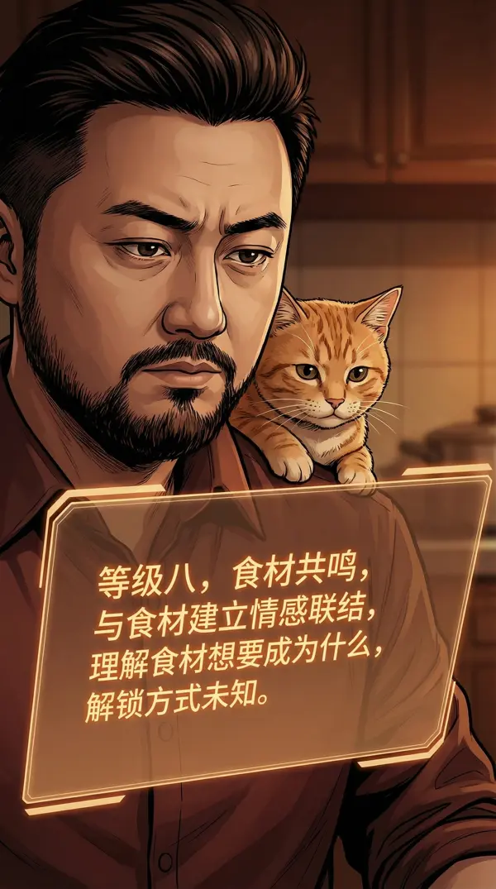
Lv.8。系统给了一个史上最不像系统的描述："食材共鸣——与食材建立情感联结。"解锁方式：未知。我问小鲜。"你被关了那么多天，有什么感想？""感想就是：你在菜地里拔草的时候，我在系统里补了八百集动漫。""……有用吗？""对Lv.8没用。但我搞懂了《灌篮高手》全国大赛篇为什么那么燃了。""为什么？""因为每个角色都是在为自己战斗。不是为了胜利，是为了不后悔。"
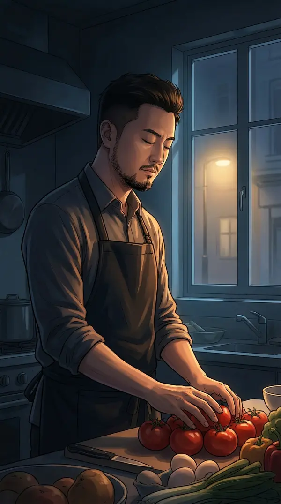
剩4天。Lv.7到Lv.8之间的距离——比之前所有等级加起来都大。王厨说他卡了二十年，我只有四天。我在深夜的后厨关了灯。黑暗中摸索食材——一个番茄。摸起来表皮光滑，按压有弹性。但我听不到它"说话"。就像当年做产品——数据告诉我用户在哪里点击，但用户的"心声"——为什么点击、点击时的情绪——这些数据测不到。
⚡ 决策点 #14
小鲜建议"做一道对你最有意义的菜——也许私人的情感联结能打开共鸣的开关"。做什么菜？
✦ A. 妈妈的番茄炒蛋——记忆中"第一道有爱的菜"
B. 五味归一汤——Ch3的原创菜，自己的厨艺哲学
C. 黄金蛋炒饭——从Lv.1到现在的"起点菜"
"我要做番茄炒蛋。""这是Lv.1的菜。""不。这是Lv.∞的菜。"——食材共鸣的本质不是技术，是爱。只有回到最初、最纯粹的那个记忆，才可能打开这扇门。
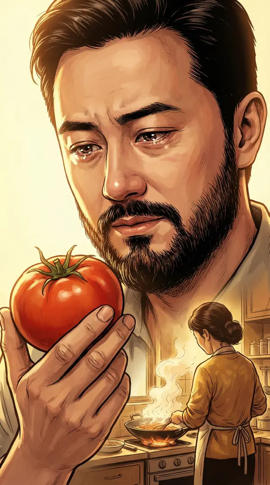
我拿起一个番茄。手指碰到它的瞬间——脑海里闪过一个画面。小学放学回家。推开门。厨房里妈妈的背影。油锅里滋滋响的番茄炒蛋。那个味道——不是任何米其林餐厅能复制的。因为那个味道里面有放学的饥饿、有回家的安全感、有妈妈不说话但用一盘菜表达的"我在乎你"。
✨ 幕三 · 触及共鸣
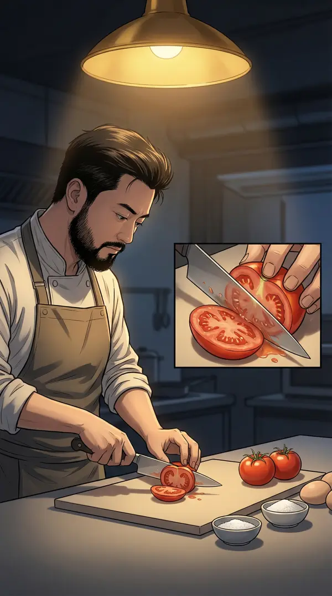
凌晨三点。后厨只有我和两个番茄、三个鸡蛋。我切番茄的时候——第一次感觉到刀刃穿过果肉时那种微微的阻力变化。表皮韧、果肉软、籽粒滑。以前这只是数据。现在——我感到了番茄在"回应"我的刀。不是拟人化的幻觉。是一种共振。就像两个音叉靠近时会互相振动。
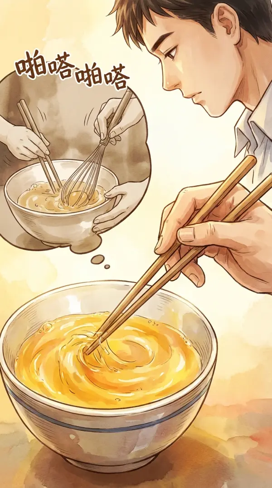
打蛋。三个鸡蛋打进碗里，蛋黄完整、橙红色——好蛋。搅拌的时候我放慢了速度。小时候妈妈搅蛋花从来不用打蛋器——就用两根筷子。"啪嗒啪嗒啪嗒"的声音是我放学后听到的第一个"家的信号"。门还没开，就知道妈在做饭了。
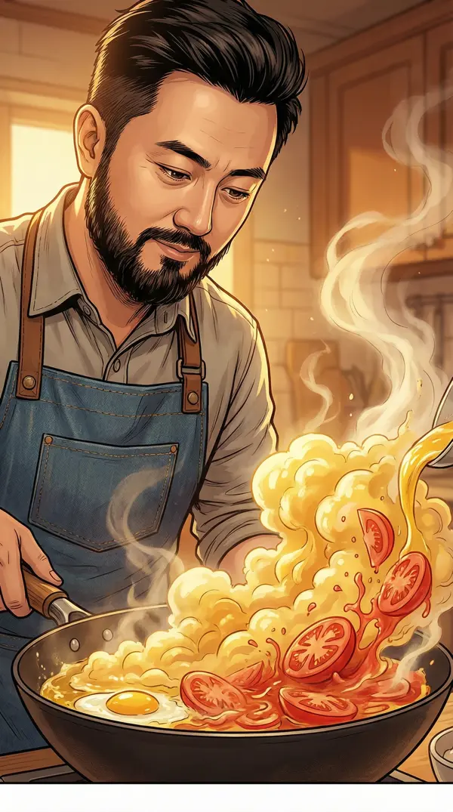
油温。我没看系统——但我知道够了。蛋液入锅，膨起金色的褶皱。番茄跟着下——红色汁水渗出来，和蛋液交融。这道菜没有任何技巧上的难度。它的全部意义在于——你用什么心情做它。妈妈用爱。我现在也用爱。只是妈妈的爱是给我的。我的爱……是给这个番茄的。给这颗蛋的。给这道菜将要遇到的那个人的。
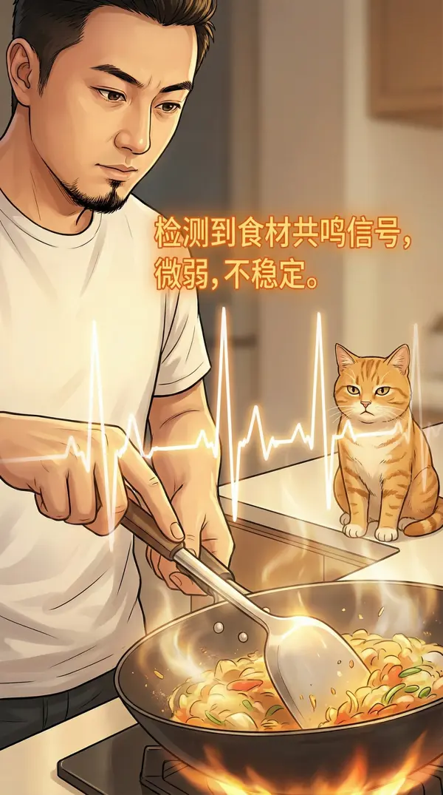
系统自己跳了出来。我没有开它——它自己出现的。但界面不一样了。没有数据、没有属性面板。只有一条波形线——像心电图，但跟着我的手在动。
～～ 食材共鸣信号 · 微弱 · 不稳定 ～～
小鲜悄悄浮了出来。它没有吐槽，没有说话。"你在做什么？""番茄炒蛋。""不是。你在做……不一样的东西。"
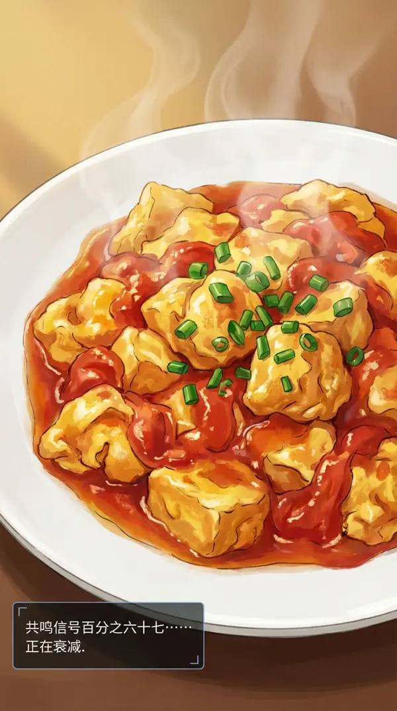
出锅。白色瓷盘上：金黄的蛋块包裹着鲜红的番茄汁，几粒翠绿葱花。蒸汽袅袅。这是我做过的最简单的一道菜——也是最好看的一道。不是因为摆盘，是因为每一块蛋、每一瓣番茄，都在它们"想在"的位置上。
【系统】共鸣信号：67%……正在衰减……
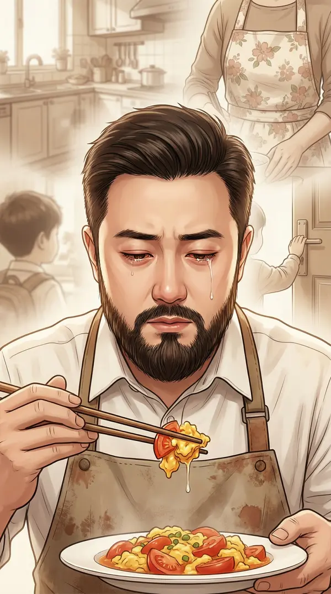
我夹起一块放进嘴里。然后愣住了。这个味道——不是我做的。是妈妈做的。是那个放学回家推开门闻到的味道。是那个油锅滋滋响、筷子啪嗒啪嗒搅、妈妈背影被厨房暖光镀了一层金边的味道。眼眶突然发酸。一滴泪掉进盘子里。小鲜飘在我肩膀上，轻轻拍了一下。它什么也没说。有些东西不需要吐槽。
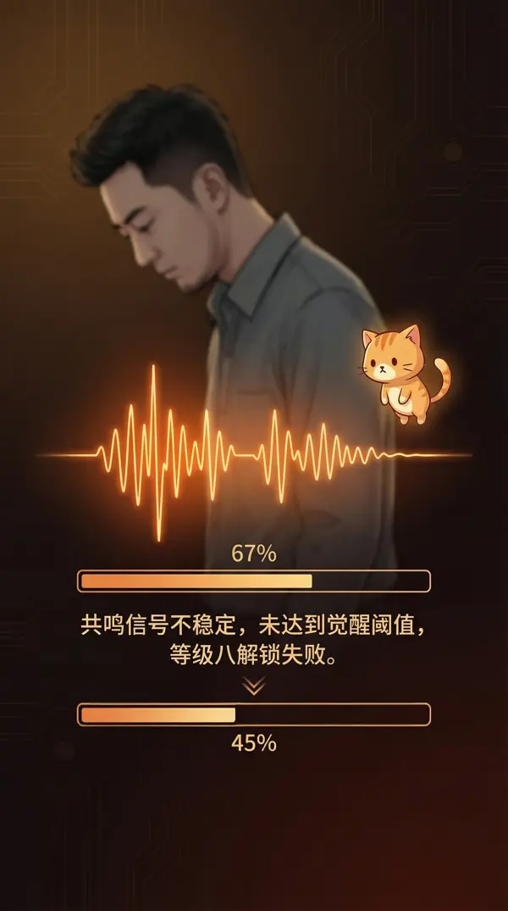
但波形在下降。67%……55%……45%。共鸣信号像潮水一样退去。系统冷冰冰地弹出：「未达到觉醒阈值。Lv.8解锁失败。」我看着那条回归平静的波形线。刚才那一刻，我确实触摸到了什么。像在深水里差一点就浮出水面——但缺了最后一口气。"差什么？""我不知道。"小鲜也摇了摇头。"但你比王厨二十年走得更远。他最高到过51%。"
【系统】共鸣觉醒失败 | 峰值信号：67% | 阈值：≥85% | 差距：18% — 你已超越认证者王厨的历史最高记录。
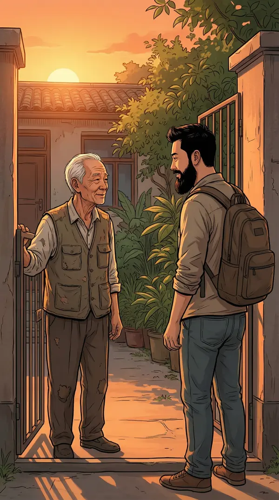
临走那天，王厨站在院门口送我。夕阳把他的白发染成金色。"最后告诉你一件事。""嗯？""Lv.8不是关于你做菜有多好。是关于你为谁做菜。"我回头看他。他笑了——四十年的厨师笑起来，眼角的皱纹像一把打开的折扇。"找到那个人，你就找到共鸣了。""王厨，您为谁做菜？""为我老伴。她走了五年了。但每天我还是会做两个人的饭。"
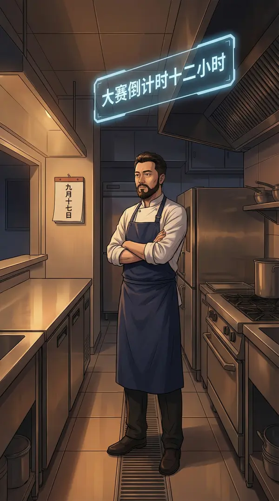
大赛前夜。后厨擦得锃亮。所有器具归位。食材已备好，分门别类放进冰箱。系统倒计时在空气中浮着：12小时。我站在空荡荡的厨房里。Lv.7。67%的共鸣峰值。够吗？赵总安排了三个评委。常规评委只看技术——但被买通的评委？他们要的不是最好，是听话。"你害怕吗？"小鲜问。"不怕输。怕差一点就能赢、却差了那一点。""那是完全不同的痛苦。""你倒挺懂。""我看了八百集动漫。见多了。"
凌晨两点。有人敲门。
我打开门的瞬间——系统疯了。
【检测到Lv.10级厨师信号……距离：0.5米】
门外站着一个人。
她手里提着一个旧布袋，
袋中露出一套我见过的、
最老旧也最锋利的厨具。
而她的脸——
我做梦都没想到会在这里看到。
小鲜在我肩膀上——直接蓝屏了。
第五章 · 即将揭晓